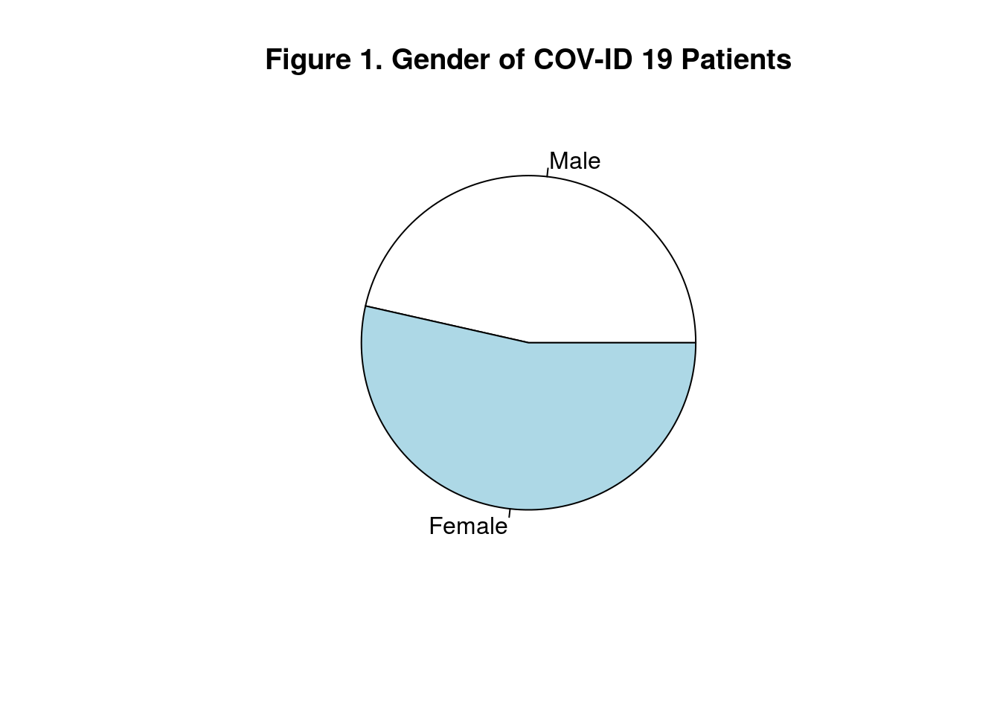
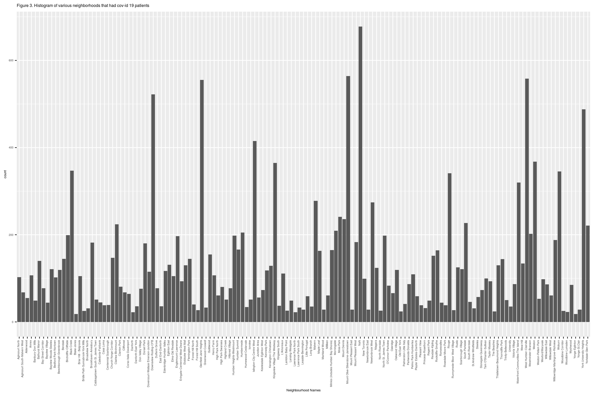

Abstract
In this blog we explore the demographics, geographic, and severity data information for all confirmed and probable cases reported to Toronto Public Health department. We find the general areas where the majority of cases are reported and can imply future trends of how the virus is going to affect Toronto, Ontario. This matters as for which areas to be extra cautious whenever travelling is needed and which age-groups are at the highest risk.
Introduction
Since January of 2020, data has been collected by the Toronto Public Health department and in this blog I sorted the raw data provided into various sections seeing any trends can be seen - these sections being: Gender, Age Groups, Demographics, and Source of Infection. Of all 17,873 observations within the data, filtering them into various categories such as different age groups can show a trend such as younger people are at much higher risk recently compared to the start of the pandemic. Many factors can contribute to this trend such as social gatherings, close proximity to infected individuals, or being with enclosed environments. Variables such as gender or race is concluded as less significant compared to other factors such as demographics and place of infections.
# get package
package <- show_package("64b54586-6180-4485-83eb-81e8fae3b8fe")
package
## # A tibble: 1 x 10
## title id topics civic_issues excerpt dataset_category num_resources formats
## <chr> <chr> <chr> <chr> <chr> <chr> <int> <chr>
## 1 COVI… 64b5… <NA> <NA> <NA> <NA> 1 <NA>
## # … with 2 more variables: refresh_rate <chr>, last_refreshed <date>
# get all resources for this package
resources <- list_package_resources("64b54586-6180-4485-83eb-81e8fae3b8fe")
# identify datastore resources; by default, Toronto Open Data sets datastore resource format to CSV for non-geospatial and GeoJSON for geospatial resources
datastore_resources <- filter(resources, tolower(format) %in% c('csv', 'geojson'))
# load the first datastore resource as a sample
data <- filter(datastore_resources, row_number()==1) %>% get_resource()
data
## # A tibble: 17,872 x 18
## `_id` Assigned_ID `Outbreak Assoc… `Age Group` `Neighbourhood … FSA
## <int> <int> <chr> <chr> <chr> <chr>
## 1 143647 1 Sporadic 50 to 59 Y… Willowdale East M2N
## 2 143648 2 Sporadic 50 to 59 Y… Willowdale East M2N
## 3 143649 3 Sporadic 20 to 29 Y… Parkwoods-Donal… M3A
## 4 143650 4 Sporadic 60 to 69 Y… Church-Yonge Co… M4W
## 5 143651 5 Sporadic 60 to 69 Y… Church-Yonge Co… M4W
## 6 143652 6 Sporadic 50 to 59 Y… Newtonbrook West M2R
## 7 143653 7 Sporadic 80 to 89 Y… Milliken M1V
## 8 143654 8 Sporadic 60 to 69 Y… Willowdale West M2N
## 9 143655 9 Sporadic 50 to 59 Y… Willowdale East M2N
## 10 143656 10 Sporadic 60 to 69 Y… Henry Farm M2J
## # … with 17,862 more rows, and 12 more variables: `Source of Infection` <chr>,
## # Classification <chr>, `Episode Date` <chr>, `Reported Date` <chr>, `Client
## # Gender` <chr>, Outcome <chr>, `Currently Hospitalized` <chr>, `Currently in
## # ICU` <chr>, `Currently Intubated` <chr>, `Ever Hospitalized` <chr>, `Ever
## # in ICU` <chr>, `Ever Intubated` <chr>Gender
Moving on to the first topic, we take a look at the genders of covid-19 patients and from the pie chart - Figure 1 - we see that although there is slightly more females that are affected by the virus we cannot conclude that the gender variable plays a significant role how the virus is spread. Out of the 17,873 observations recorded in the data file, the gender split between infected patients seem to be fairly balanced and we cannot conclude a trend or remark that females are more at risk than males.
#Count the number of males and females within the data
num_of_males <- length(which(data$`Client Gender`== "MALE"))
num_of_females <- length(which(data$`Client Gender`== "FEMALE"))
#Create vectors to plot into pie chart
x <- c(num_of_males, num_of_females)
labels <- c("Male", "Female")
#Plot the data into a pie chart
pie(x, labels, main = "Figure 1. Gender of COV-ID 19 Patients")
Age Groups
As we can see from the pie-chart of all the age-groups generated in Figure 2, more than a quarter of COV-ID 19 cases reported in Toronto are between the ages 20 and 39, this means that elders with relatively weaker immune systems are not the only age groups that are at high risk with COV-ID 19. Adults and young adults also have high chances of catching the virus this can be due a variety of factors such as work, travel, and social gatherings. Although we cannot directly pin-point the reasons for the trend of more young adults having increase risk of catching the virus, but data shows that there appears to be an upward trend towards younger individuals. Stating from an article posted by CBC news “Proportion of cases among those under 19 and those 20 to 29 has increased significantly” (Brown, D.). From Figure 2, we can see an uptrend towards young adults specifically ages between 20 to 29 having an increase in risk of catching covid-19. About 63 per cent of all new cases are in people under the age of 40 furthering showing that the trend is shifting towards younger individuals (CP24, Wilson, C).
#Filter data into different age groups counting how many answers for each age group were collected.
age1 <- length(which(data$`Age Group`== "19 and younger"))
age2 <- length(which(data$`Age Group`== "20 to 29 Years"))
age3 <- length(which(data$`Age Group`== "30 to 39 Years"))
age4 <- length(which(data$`Age Group`== "40 to 49 Years"))
age5 <- length(which(data$`Age Group`== "50 to 59 Years"))
age6 <- length(which(data$`Age Group`== "60 to 69 Years"))
age7 <- length(which(data$`Age Group`== "70 to 79 Years"))
age8 <- length(which(data$`Age Group`== "80 to 89 Years"))
age9 <- length(which(data$`Age Group`== "90 and older"))
#Create vectors for each variable -
x2 <- c(age1,age2,age3,age4,age5,age6,age7,age8,age9)
labels2 <- c("19 and younger", "20 to 29 Years", "30 to 39 Years", "40 to 49 Years", "50 to 59 Years", "60 to 69 Years", "70 to 79 Years", "80 to 89 Years","90 and older")
pie(x2, labels2, main = "Figure 2. Age groups of COV-ID 19 Patients")
Demographics
In this topic, the various areas throughout Toronto shows the number of infected patients throughout their corresponding neighbourhoods. Through the histogram in Figure 3, it listed all the neighbourhoods within Toronto that had covid-19 patients and displayed a count for each area. Since the histogram was too crowded for any analysis to take place, the first table contains the data of the distinct areas and the counts to show the number of patients within each neighbourhood. The second table was filtered to only contain areas with more than 300 cases of covid-19. Given that all of these areas listed in the second table show significant amount of cases compared to 128 areas, it is safe to say that the top 5 most affected areas are: Kingsview Village-The Westway (565 cases), Mount Olive-Silverstone-Jamestown (564 cases), West Humber-Clairville (558 cases), Glenfield-Jane Heights (555 cases), and Downsview-Roding-CFB (522 cases). As of Demographically speaking, these five neighbourhoods are all West of North York and North of Etobicoke and relatively close to Toronto Pearson Airport. There is a high probability that many of the cases were related to traveling and spread within those communities. This hypothesis will be verified in the next section where we look into the sources of infections. From an article by CP24 posted on September 24th, 2020, as the “second wave” just commenced and cases have increased significantly over the past month, as of the 24th there were over 400 cases reported in Ontario and majority of 151 new cases were reported in Toronto and 46 new cases in the Peel region (Wilson, C). Further showing that an uptrend in cases in specifically in Toronto and Peel.
data %>%
ggplot(aes(x=data$'Neighbourhood Name'))+
geom_bar()+
stat_count(width = 0.1)+
theme(text=element_text(size=5),axis.text.x = element_text(angle = 90, vjust = 0, hjust=1))+
labs(title="Figure 3. Histogram of various neighborhoods that had cov-id 19 patients", x = "Neighbourhood Names")
## Warning: Use of `data$"Neighbourhood Name"` is discouraged. Use `Neighbourhood
## Name` instead.
## Warning: Use of `data$"Neighbourhood Name"` is discouraged. Use `Neighbourhood
## Name` instead.
table_count <- data %>%
group_by(data$`Neighbourhood Name`) %>%
tally()
table_count
## # A tibble: 141 x 2
## `data$\`Neighbourhood Name\`` n
## <chr> <int>
## 1 Agincourt North 103
## 2 Agincourt South-Malvern West 68
## 3 Alderwood 55
## 4 Annex 107
## 5 Banbury-Don Mills 49
## 6 Bathurst Manor 140
## 7 Bay Street Corridor 77
## 8 Bayview Village 44
## 9 Bayview Woods-Steeles 121
## 10 Bedford Park-Nortown 102
## # … with 131 more rows
highest_cases_areas <-
table_count%>%
filter(n>300)
highest_cases_areas
## # A tibble: 13 x 2
## `data$\`Neighbourhood Name\`` n
## <chr> <int>
## 1 Black Creek 347
## 2 Downsview-Roding-CFB 522
## 3 Glenfield-Jane Heights 555
## 4 Islington-City Centre West 415
## 5 Kingsview Village-The Westway 365
## 6 Mount Olive-Silverstone-Jamestown 564
## 7 NaN 678
## 8 Rouge 341
## 9 Waterfront Communities-The Island 320
## 10 West Humber-Clairville 558
## 11 Weston 368
## 12 Woburn 345
## 13 York University Heights 488Source of Infection
This section talks about generally where patients were infected. Covid-19 can be transmitted through various forms such as through being close contact with an infected individuals, touching objects that infected people have touched, or through the air in a closed environment (BCDC). In Figure 4 we see the survey answers of where individuals report where they came in contact with the virus. As we can see from the pie chart below, over half of the cases came from close contact or from within a community, while travel fits only a relatively small percentage. This contradicts the hypothesis given above that travel is one of the biggest sources of infection, especially international travel. Although travel is a major source of how the virus enters the country but how the virus is spread especially within communities and having close contact with individuals that are infected plays a bigger role in the increase in cases.
travel <- length(which(data$`Source of Infection`== "Travel"))
healthcare <- length(which(data$`Source of Infection` == "Healthcare"))
closecontact <- length(which(data$`Source of Infection` == "Close contact"))
community <- length(which(data$`Source of Infection` == "Community"))
outbreak <- length(which(data$`Source of Infection` == "N/A - Outbreak associated"))
#Create vectors to plot into pie chart
x <- c(travel, healthcare, closecontact, community, outbreak)
labels <- c("Travel", "Healthcare", "Close contact", "Community", "Outbreak associated")
#Plot the data into a pie chart
pie(x, labels, main = "Figure4. Sources of Infection")
##Weaknesses and Next Steps
The weaknesses in the data provided is that it contains general answers such as NA that could affect the trends of the data. In order to show more clarity, I omitted the answers with NA which had little significance towards the overall conclusions made.
The next steps prepared is to continue monitor the number of cases as well as age groups of infected individuals; as the city shows more caution towards tackling the pandemic, the municipal implements more regulations in order to stop the spread of covid-19. As there is an upward trend towards young adults and adults, the next steps are to limit social gatherings and limit contact between individuals. This is easier than said, but as a community we must strictly follow advices given by Public Health Ontario and stop the pandemic altogether.
##References
Citations: BCDC. How it Spreads. Retrieved September 25, 2020, from http://www.bccdc.ca/health-info/diseases-conditions/covid-19/about-covid-19/how-it-spreads
Brown, D. (2020, August 19). COVID-19 cases in Toronto continue to shift to younger age groups, mayor says | CBC News. Retrieved September 25, 2020, from https://www.cbc.ca/news/canada/toronto/toronto-covid19-update-august19-1.5692151
Wilson, C. (2020, September 24). New COVID-19 cases surpass 400 again in Ontario after dip in new infections on Wednesday. Retrieved September 25, 2020, from https://www.cp24.com/news/new-covid-19-cases-surpass-400-again-in-ontario-after-dip-in-new-infections-on-wednesday-1.5118306